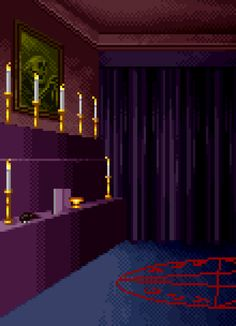

Mistérios da Mansão Esquecida

Com um pressentimento sombrio, você decide seguir o caminho da esquerda. O corredor parece estreitar-se ainda mais à medida que avança, criando uma sensação de claustrofobia que o envolve. Em meio à escuridão, você avista uma porta entreaberta à frente, exalando uma aura de mistério. Com um passo vacilante, você se aproxima e a empurra, revelando um quarto escuro e desolado. Antes que possa entender completamente o que está acontecendo, a porta se fecha atrás de você, deixando-o preso na escuridão para sempre.